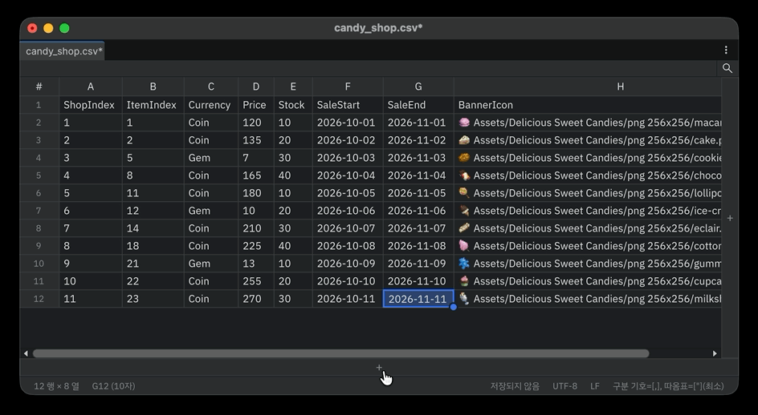

편집
셀 편집
- 셀을 고르고 바로 타이핑하면 값을 새로 씁니다. F2나 더블클릭은 기존 값 끝에 캐럿을 두고 편집합니다.
- 편집 입력칸은 셀 위에 두 줄 높이로 열리고, 글자가 길어지면 오른쪽으로 표 끝까지 늘어난 뒤 줄바꿈해서 아래로 늘어납니다.
- Alt+Enter(macOS는 Option+Enter)는 확정하지 않고 셀 안에서 줄을 바꿉니다.
- 범위를 고른 상태에서 값을 입력하고 Ctrl+Enter(macOS는 Cmd+Enter)를 누르면 선택 범위 전체에 같은 값이 들어갑니다.
- Esc로 편집을 취소합니다.
모든 변경은 표 전용 Undo(Ctrl+Z)로 한 단계씩 되돌아갑니다. Unity의 Scene Undo와는 섞이지 않습니다.
행과 열
| 작업 | 방법 |
|---|---|
| 맨 끝에 추가 | 표 오른쪽·아래쪽 끝의 + 버튼 |
| 위·아래에 행 추가 | Ctrl+Alt+↑ / ↓, 또는 우클릭 위에 행 삽입 / 아래에 행 삽입 |
| 왼쪽·오른쪽에 열 추가 | Ctrl+Alt+← / →, 또는 우클릭 왼쪽에 열 삽입 / 오른쪽에 열 삽입 |
| 행 복제 | Ctrl+D, 또는 우클릭 행 복제 (선택한 행을 바로 아래에 복사) |
| 행·열 한 칸씩 옮기기 | Alt+↑ / ↓(행), Alt+← / →(열) |
| 삭제 | Ctrl+-, 우클릭 행 삭제 / 열 삭제, 또는 행 번호·열 제목으로 선택한 뒤 Delete |
- 여러 행이나 열을 선택한 상태면 그 개수만큼 한 번에 추가·삭제합니다.
- 셀 범위를 선택하고 Delete를 누르면 내용만 지워집니다. Ctrl+-는 그 셀들이 걸친 행을 지웁니다.
- 행은 헤더 행 구간과 본문 구간 사이를 넘어 옮겨지지 않습니다.
- 마지막 남은 한 행·한 열은 지울 수 없습니다.
정렬
열 제목의 ▼ 버튼이나 열 제목 우클릭 메뉴에서 오름차순 정렬 / 내림차순 정렬을 고릅니다.

- 숫자만 있는 열은 숫자 크기로(
1, 2, 10), ISO 날짜는 날짜로, 그 밖에는 대소문자를 가리지 않는 글자 순서로 정렬합니다. - 빈 셀은 어느 방향이든 맨 뒤로 갑니다. 같은 값끼리는 원래 순서를 유지합니다.
- 헤더 행은 정렬에서 빠집니다. Undo 한 번으로 원래 순서로 돌아갑니다.
채우기 핸들
선택 범위 오른쪽 아래의 동그란 핸들을 아래·위·오른쪽·왼쪽으로 끌면 늘어난 칸을 채웁니다. 끄는 동안 채워질 범위가 옅은 파란 상자로 보이고, 표 밖으로 끌면 그 방향으로 스크롤됩니다.
| 원본 | 채워지는 값 |
|---|---|
숫자 두 칸 이상 (1, 3) |
같은 간격으로 이어 감 (5, 7) |
끝에 숫자가 붙은 글자 (spr_buff_1000, item_007) |
숫자를 1씩 이어 감, 자릿수 유지 (spr_buff_1001, item_008). 위·왼쪽으로 끌면 줄어듦 |
| 숫자 한 칸, 그 밖의 글자 | 복사. 여러 칸이면 순서대로 반복 |
놓을 때 Alt(macOS는 Option)를 누르고 있으면 이어 가기와 복사가 바뀝니다. 숫자 한 칸(1000)을 Alt를 누른 채 끌면 1001, 1002…로 이어 갑니다(Excel의 Ctrl 끌기와 같습니다). 본문에서 시작해 위로 끌어도 헤더 행까지는 채우지 않습니다.

행이나 셀로 이동
Ctrl+G(macOS는 Cmd+G)를 누르면 표 위에 입력칸이 뜹니다.
| 입력 | 이동 |
|---|---|
120 |
120행 (열은 그대로) |
C120 |
C열 120행 |
120:3 |
120행 3열 |
범위를 넘는 번호는 마지막 행·열로 맞춥니다. 해석할 수 없는 입력이면 입력칸이 빨갛게 표시됩니다. Enter로 이동하고 Esc나 바깥 클릭으로 닫습니다.

복사와 붙여넣기
클립보드는 편집 중인 파일이 CSV여도 항상 탭으로 구분된 사각형 범위입니다. Excel, Google Sheets, Numbers와 그대로 주고받을 수 있습니다.